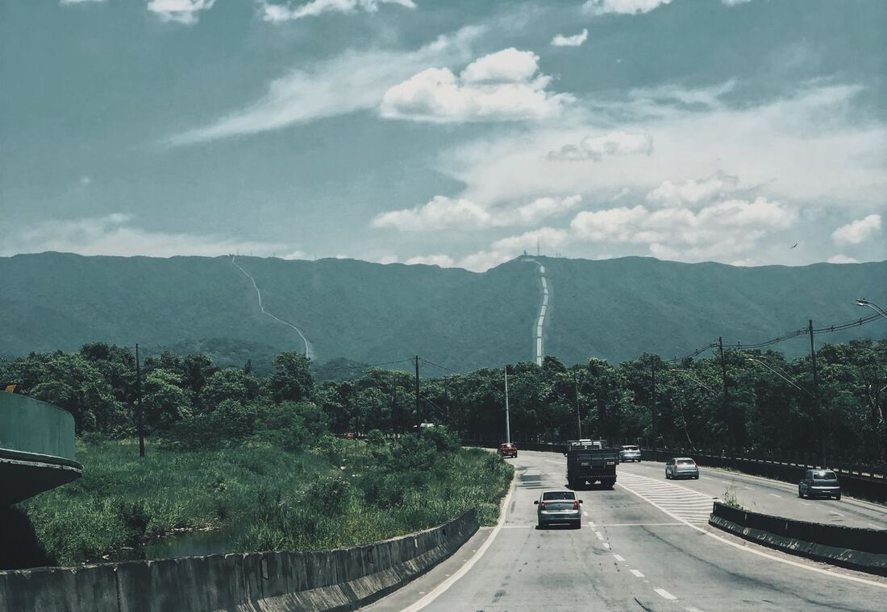

01 Ride type
One Way Drop Taxi
Travelling in one direction only? Then you should only pay for one direction. Our one way drops are perfect for moving between cities, catching a flight, or getting to a function without paying for a car to follow you home.
Good for
- Drops to Chennai, Bengaluru, Tirupati and beyond
- Airport and railway station transfers
- Single-direction work travel
What you get
- A vehicle category that suits your group and luggage
- A fare you see before the trip, inclusions explained
- A friendly point of contact if plans change